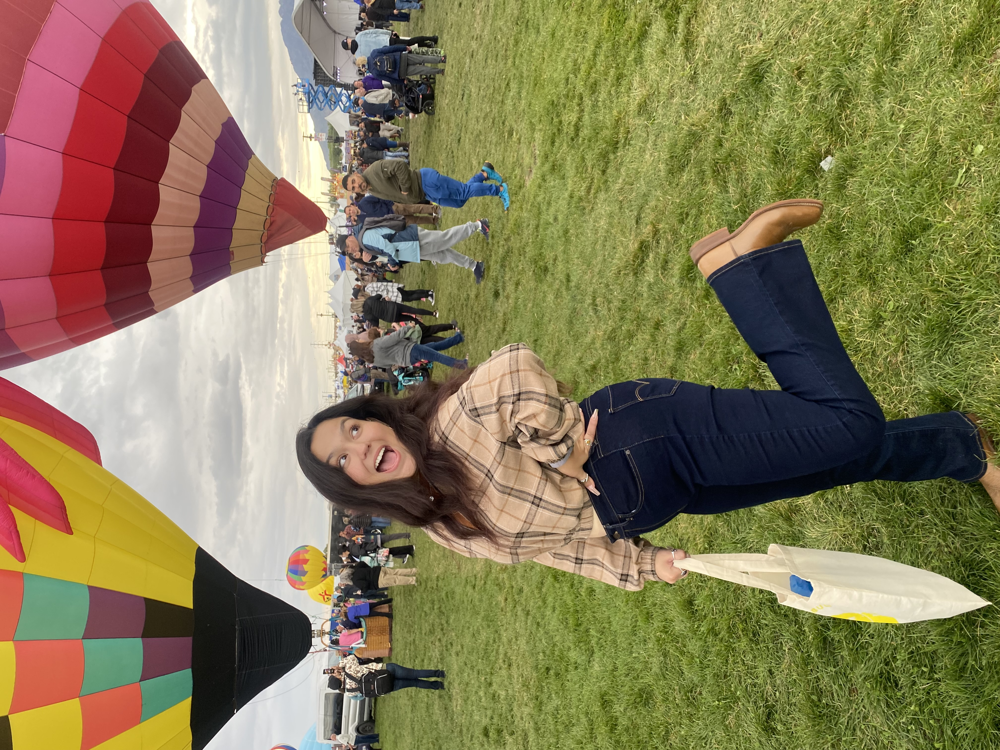

Daniela Millan
dmillan@unm.edu
About Me:
My name is Daniela Millan and I am a 4th year studying Political Science and Communication. I was born and raised in Albuquerque, New Mexico. After I finish with my undergraduate degree, I plan to go to Law School where I want to study Immigration Law. I transferred to UNM in Fall 2021 when I started my Sophomore year and before that, I was at CNM. The reason that I started at CNM was because I graduated from highschool in May of 2020 when the Covid Pandemic started. Due to tha fact, I decided to take courses at CNM in the meantime since all classes were online. In that one year at CNM, I was able to finish my Associate's degree that then pushed me to transfer to UNM. Since transferring, I have gotten invovled in many organizations on campus including LoboTHON,Trailblazers, Mortarboard, ASUNM, and Pre-Law Society.
Why I'm taking this course:
I am taking this course because I am majoring in Communication and the course sounded interesting to me. I needed to fulfill required courses for my major and saw web design as an option and decided to sign up. Overall, I am very excited to start this course and see what everyone does! I have previously worked with webdesign and HTML in school but had never learned how to properly use it. I am excited to learn from scratch and see what I can do and learn.